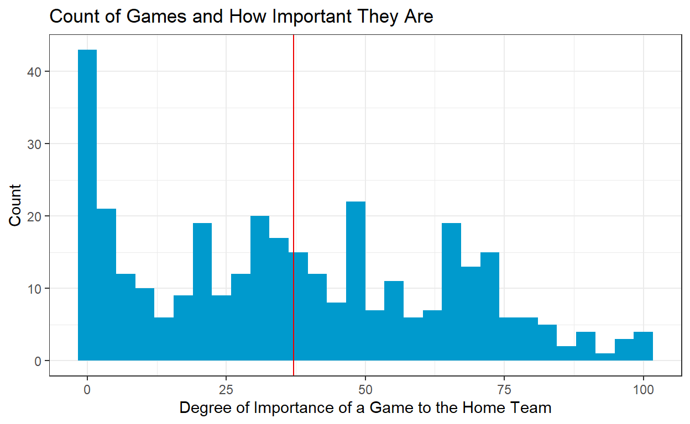
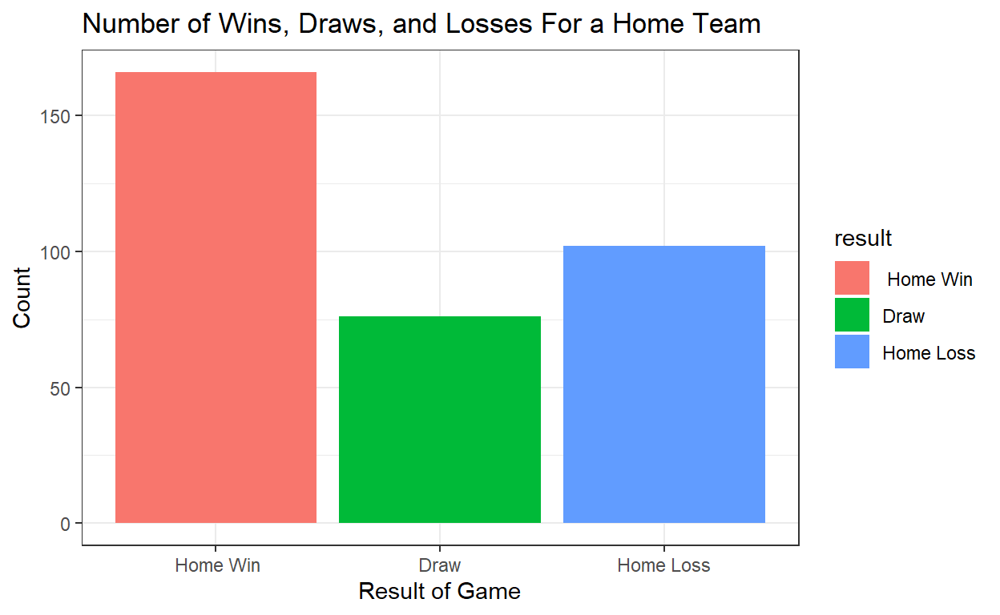
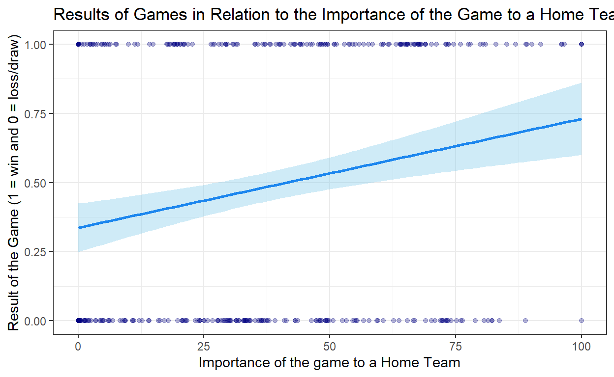
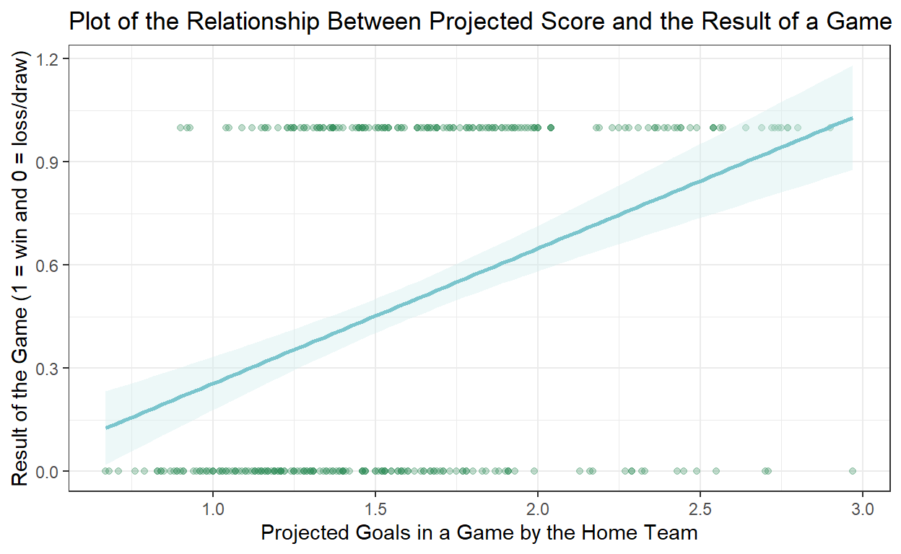

How Barclay’s Premier League clubs’ forms in the 2016-2017 season were influenced by the importance of their games.
Does the importance of a soccer game influence whether or not a home team wins a game? In this study, I want to observe the relationship between a match’s importance to a home team and the result of that match for the team. I hypothesize that as a match increases in importance, a home team will be more likely to get a positive result from their game. A positive result in this study is defined as a win or draw since these results increase a team’s point tally in the league (3 points for a win and 1 point for a draw). My sample for this study is comprised of the 20 Barclay’s Premier League teams in the 2016-2017 season. I will be using the spi.matches.csv dataset to in this research. My unit of analysis will be a home team (for each individual game). The explanatory variable of interest is how important a game is to a home team (importance1 measures the importance of a home team). The explanatory variable is measured on a scale of 0-100, 0 meaning not important and 100 meaning the most important. My outcome variable is the results of a game for a home team. If I observe a positive linear relationship between the importance of a match to a home team and the result, then this will provide support for my hypothesis. If there is a negative relationship, then this would provide support against my hypothesis as this would mean that the more important the game, the less a home team wins. The study is important in order to try and understand how best to predict a sports game. There are many variables that go into predicting the result of a soccer match, but if we can isolate the importance of a game as the explanatory variable, then we will can form more accurate predictions.
As aforementioned, the data I am using for this study comes from the spi.matches.csv dataset. The names and descriptions of the variables included in this dataset are shown below. For this study, it is important to preface that the SPI (Soccer Power Index) ratings of the teams are generated by ESPN’s rating system and is designed to best represent a team’s current skill level. It is described as forward-looking and predictive.
| Name | Description |
|---|---|
season |
The season during which the match was played. |
date |
The date of the match (YYYY-MM-DD). |
league_id |
A unique identifier for the league this match was played in. |
league |
Name of the league this match was played in. |
team1 |
The home team’s name. |
team2 |
The away team’s name. |
spi1 |
The home team’s overall SPI rating before the match. |
spi2 |
The away team’s overall SPI rating before the match. |
prob1 |
The probability of the home team winning the match. |
prob2 |
The probability of the away team winning the match. |
probtie |
The probability of match ending in a draw. (if applicable) |
proj_score1 |
The number of goals we expected the home. team to score |
proj_score2 |
The number of goals we expected the away. team to score |
importance1 |
The importance of the match for the home. team (0-100). |
importance2 |
The importance of the match for the away. team (0-100). |
score1 |
The number of goals scored by the home. team. |
score2 |
The number of goals scored by the away. team. |
xg1 |
The number of expected goals created by the home team. |
xg2 |
The number of expected goals created by the away team. |
nsxg1 |
The number of non-shot expected goals created by the home team. |
nsxg2 |
The number of non-shot expected goals created by the away team. |
adj_score1 |
The number of goals scored by the home team, adjusted for game state. |
adj_score2 |
The number of goals scored by the away team, adjusted for game state. |
# A tibble: 68,913 × 23
season date league_id league team1 team2 spi1 spi2 prob1
<dbl> <date> <dbl> <chr> <chr> <chr> <dbl> <dbl> <dbl>
1 2016 2016-07-09 7921 FA Women… Live… Read… 51.6 50.4 0.439
2 2016 2016-07-10 7921 FA Women… Arse… Nott… 46.6 54.0 0.357
3 2016 2016-07-10 7921 FA Women… Chel… Birm… 59.8 54.6 0.480
4 2016 2016-07-16 7921 FA Women… Live… Nott… 53 52.4 0.429
5 2016 2016-07-17 7921 FA Women… Chel… Arse… 59.4 61.0 0.412
6 2016 2016-07-24 7921 FA Women… Read… Birm… 50.8 55.0 0.382
7 2016 2016-07-24 7921 FA Women… Nott… Manc… 48.1 60.2 0.308
8 2016 2016-07-31 7921 FA Women… Read… Nott… 50.6 52.6 0.407
9 2016 2016-07-31 7921 FA Women… Arse… Live… 48.3 48.5 0.435
10 2016 2016-08-03 7921 FA Women… Read… Manc… 50.4 63.2 0.306
# ℹ 68,903 more rows
# ℹ 14 more variables: prob2 <dbl>, probtie <dbl>, proj_score1 <dbl>,
# proj_score2 <dbl>, importance1 <dbl>, importance2 <dbl>,
# score1 <dbl>, score2 <dbl>, xg1 <dbl>, xg2 <dbl>, nsxg1 <dbl>,
# nsxg2 <dbl>, adj_score1 <dbl>, adj_score2 <dbl>Because the scope of this study is on the 2016-2017 English Premier League, the data I am using needed to be filtered. To do that, I set the variable league to “Barclay’s Premier League” and season to “2016” or “2017” to get data from the 2016-2017 season. Additionally, because this study is on the results of the
Data <- Data |>
drop_na()
pl_table_2016 <- Data |>
filter(league == "Barclays Premier League", season == "2016" | season == "2017") |>
mutate(result = case_when(score1 > score2 ~ " Home Win",
score1 < score2 ~ "Home Loss",
score2 == score1 ~ "Draw"),
result1 = case_when(score1 > score2 ~ 1,
score1 < score2 ~ 0,
score2 == score1 ~ 0)) |>
group_by(importance1, importance2)
pl_table_2016# A tibble: 724 × 25
# Groups: importance1, importance2 [688]
season date league_id league team1 team2 spi1 spi2 prob1
<dbl> <date> <dbl> <chr> <chr> <chr> <dbl> <dbl> <dbl>
1 2016 2016-08-13 2411 Barclays… Hull… Leic… 53.6 66.8 0.346
2 2016 2016-08-13 2411 Barclays… Ever… Tott… 68.0 73.2 0.391
3 2016 2016-08-13 2411 Barclays… Crys… West… 55.2 58.7 0.421
4 2016 2016-08-13 2411 Barclays… Midd… Stok… 56.3 60.4 0.438
5 2016 2016-08-13 2411 Barclays… Sout… Watf… 69.5 59.3 0.576
6 2016 2016-08-13 2411 Barclays… Burn… Swan… 59.0 59.7 0.448
7 2016 2016-08-13 2411 Barclays… Manc… Sund… 86.4 53.6 0.815
8 2016 2016-08-14 2411 Barclays… AFC … Manc… 61.6 80.5 0.211
9 2016 2016-08-14 2411 Barclays… Arse… Live… 82.6 77.4 0.555
10 2016 2016-08-15 2411 Barclays… Chel… West… 80.7 63.3 0.691
# ℹ 714 more rows
# ℹ 16 more variables: prob2 <dbl>, probtie <dbl>, proj_score1 <dbl>,
# proj_score2 <dbl>, importance1 <dbl>, importance2 <dbl>,
# score1 <dbl>, score2 <dbl>, xg1 <dbl>, xg2 <dbl>, nsxg1 <dbl>,
# nsxg2 <dbl>, adj_score1 <dbl>, adj_score2 <dbl>, result <chr>,
# result1 <dbl>pl_importance <- ggplot(data = pl_table_2016, mapping = aes(x = importance1)) +
geom_histogram(fill = "deepskyblue3") +
labs(x = "Degree of Importance of a Game to the Home Team", y = "Count") +
theme_bw()
pl_importance
pl_importance_results <- ggplot(data = pl_table_2016, mapping = aes(x = importance1, y = result1)) +
geom_point() +
theme_bw() +
geom_smooth(method = "lm") +
labs(x = "Importance of the game to a Home Team", y = "Result of the Game (1 = win/draw and 0 = loss)", title = "Results of Games in Relation to the Importance of the Game to a Home Team")
pl_importance_results
count_table <- pl_table_2016 |>
ggplot(aes(x = result)) +
geom_bar(mapping = aes(fill = result)) +
theme_light()
count_table
Linear Regression for Importance of Games for Premier League Teams
library(texreg)
fit1 <- lm(result1 ~ importance1 + importance2 + xg1 + xg2 + spi1 + spi2 + prob1 + prob2 + probtie, data = pl_table_2016)
print(summary(fit1), digits = 3)
Call:
lm(formula = result1 ~ importance1 + importance2 + xg1 + xg2 +
spi1 + spi2 + prob1 + prob2 + probtie, data = pl_table_2016)
Residuals:
Min 1Q Median 3Q Max
-0.9638 -0.3572 -0.0461 0.4076 0.9539
Coefficients:
Estimate Std. Error t value Pr(>|t|)
(Intercept) -2.31e+02 3.37e+02 -0.69 0.493
importance1 8.51e-04 7.19e-04 1.18 0.236
importance2 -1.26e-03 7.35e-04 -1.71 0.087 .
xg1 1.35e-01 2.19e-02 6.18 1.0e-09 ***
xg2 -1.40e-01 2.55e-02 -5.47 6.4e-08 ***
spi1 -1.30e-03 7.24e-03 -0.18 0.858
spi2 8.56e-04 7.20e-03 0.12 0.905
prob1 2.32e+02 3.37e+02 0.69 0.492
prob2 2.31e+02 3.37e+02 0.69 0.492
probtie 2.31e+02 3.37e+02 0.69 0.493
---
Signif. codes: 0 '***' 0.001 '**' 0.01 '*' 0.05 '.' 0.1 ' ' 1
Residual standard error: 0.435 on 714 degrees of freedom
Multiple R-squared: 0.25, Adjusted R-squared: 0.24
F-statistic: 26.4 on 9 and 714 DF, p-value: <2e-16fit2 <- lm(result1 ~ importance1, data = pl_table_2016)
pl_table_2016 |>
ggplot(aes(x = importance1, y = xg1)) +
geom_point() +
facet_wrap(~result1) +
labs(x = "Importance of the Game to a Home Team", y = "Expected Goals",title = "Regression Between the Importance of a Home Match to a Team and the Result of the Match") +
theme_bw() +
geom_smooth(method = "lm")
# A tibble: 10 × 5
term estimate std.error statistic p.value
<chr> <dbl> <dbl> <dbl> <dbl>
1 (Intercept) -231. 337. -0.686 0.493
2 importance1 0.000851 0.000719 1.18 0.236
3 importance2 -0.00126 0.000735 -1.71 0.0869
4 xg1 0.135 0.0219 6.18 0.00000000105
5 xg2 -0.140 0.0255 -5.47 0.0000000636
6 spi1 -0.00130 0.00724 -0.179 0.858
7 spi2 0.000856 0.00720 0.119 0.905
8 prob1 232. 337. 0.688 0.492
9 prob2 231. 337. 0.687 0.492
10 probtie 231. 337. 0.686 0.493 pl_var_labels <- c("(Intercept)" = "Intercept",
"importance1" = "Match Importance to Home Team",
"importance2" = "Match Importance to Away Team",
"xg1" = "Home Team Expected Goals",
"xg2" = "Away Team Expected Goals",
"spi1" = "Home Team's Rating Before the Match",
"spi2" = "Away Team's Rating Before the Match",
"prob1" = "Probability of Home Team Winning",
"prob2" = "Probability of Away Team Winning",
"probtie" = "Probability of a Tie"
)
modelsummary::modelsummary(fit1, statistic = c("s.e. = {std.error}", "p = {p.value}"), coef_map = pl_var_labels, gof_map = c("nobs", "r.squared", "adj.r.squared"), fmt = 2)| (1) | |
|---|---|
| Intercept | −231.10 |
| s.e. = 337.06 | |
| p = 0.49 | |
| Match Importance to Home Team | 0.00 |
| s.e. = 0.00 | |
| p = 0.24 | |
| Match Importance to Away Team | 0.00 |
| s.e. = 0.00 | |
| p = 0.09 | |
| Home Team Expected Goals | 0.14 |
| s.e. = 0.02 | |
| p = <0.01 | |
| Away Team Expected Goals | −0.14 |
| s.e. = 0.03 | |
| p = <0.01 | |
| Home Team’s Rating Before the Match | 0.00 |
| s.e. = 0.01 | |
| p = 0.86 | |
| Away Team’s Rating Before the Match | 0.00 |
| s.e. = 0.01 | |
| p = 0.91 | |
| Probability of Home Team Winning | 231.88 |
| s.e. = 337.05 | |
| p = 0.49 | |
| Probability of Away Team Winning | 231.46 |
| s.e. = 337.06 | |
| p = 0.49 | |
| Probability of a Tie | 231.09 |
| s.e. = 337.06 | |
| p = 0.49 | |
| Num.Obs. | 724 |
| R2 | 0.250 |
| R2 Adj. | 0.240 |
[INSERT INFO HERE]
The purpose of this study was to observe the relationship between the importance of games to a Barclay’s Premier League home team and the result of those games in the 2016-2017 season. I hypothesized that as the importance of the games increased, teams would get more wins/draws than losses.